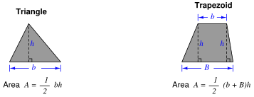
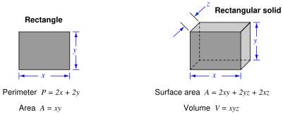
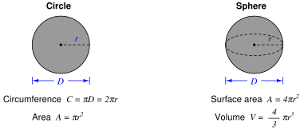
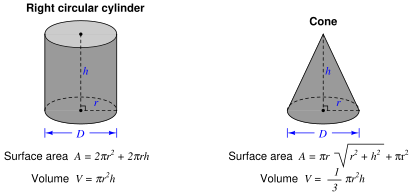
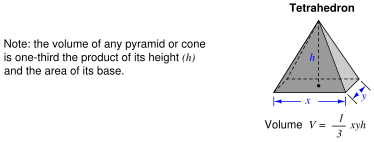

Subsections
Area refers to the size of two-dimensional surface. Volume refers to the size of a three-dimensional space. To put both these measures into context; the question of how much paint will be required to adequately cover a house is one of area, while the question of how much water will be required to fill a pond is one of volume.
Some units of measurement for area and volume are nothing more than compounded linear units. Ten centimeters is an expression of distance, while ten square centimeters (cm ) is an expression of area, and ten cubic centimeters (cm
) is an expression of area, and ten cubic centimeters (cm ) is an expression of volume. It important to note that the modifiers “square” and “cubic” do not in any way imply the object in question is square or cubic in shape. It is perfectly reasonable to measure the area of a circle, for instance, using the unit of square centimeters.
) is an expression of volume. It important to note that the modifiers “square” and “cubic” do not in any way imply the object in question is square or cubic in shape. It is perfectly reasonable to measure the area of a circle, for instance, using the unit of square centimeters.
Other units of spatial measurement are specific to area or to volume. The acre, for example, is a unit of area measurement developed for the purpose of quantifying the size of land plots, one acre being equivalent to 43560 square feet. An example of a unit specifically devoted to volume measurement is the liter, equivalent to 1000 cubic centimeters.




